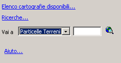
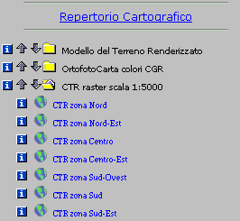
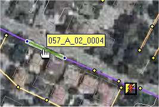
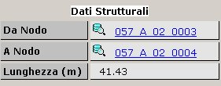
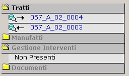

Cliccando sulla i a lato, invece, è possibile visualizzare tutte le informazioni relative a quel layer.
N.B. In questa pagina si dispone solo di alcuni gruppi di layers. Il set completo di temi è disponibile nella pagina del GeoCatalogo.
- La pagina Strumenti
- La pagina Cerca
- La pagina del Catalog
- Il viewer MapGuide®: link e info
- I comandi del viewer del MapGuide®
- La legenda del viewer
- La
navigazione sulla rete
- I Menu delle
Utility
|
Il check box spuntato significa che la cartografia per quel dataset è caricata e visibile. Nel caso in cui non tutti i temi di quel gruppo sono caricati, si ha un check box grigio ad indicare il non completo stato di caricamento. |
|
|
L'utente può caricare/scaricare i temi di un dataset semplicemente cliccando sul check box e aggiornando la mappa.
Cliccando sulla i a lato, invece, è possibile visualizzare tutte le informazioni relative a quel layer. N.B. In questa pagina si dispone solo di alcuni gruppi di layers. Il set completo di temi è disponibile nella pagina del GeoCatalogo. |
 |
Report Per visualizzare le informazioni in formato stampabile, è sufficiente selezionare sulla mappa gli oggetti interessati e scagliere il report.  |
|  | Un apposito combo box permette di selezionare il tipo di ricerca. Immettendo una parola chiave e cliccando sull'icona di ricerca, l'applicazione effettua lo zoom sulla mappa o mostra la lista degli oggetti corrispondenti al criterio inserito dall'utente. |
 |
Con la Pagina Cerca è possibile effettuare ricerche sui dati selezionando il tipo di ricerca e digitando, nella cartella sottostante, il nome o il codice dell'oggetto. Cliccare sull'icona per avviare la ricerca. Dall'elenco dei risultati è possibile:  Localizzare il punto sulla mappa. Localizzare il punto sulla mappa. Visualizzare la scheda dati associata. Visualizzare la scheda dati associata.
|
|  |
Cliccando sul simbolo o sul nome del dataset è possibile visualizzare i temi contenuti.
Ogni tema può essere caricato/scaricato nella mappa individualmente (click sull'icona a forma di mondo) oppure insieme a tutti i layer di un dataset
(click sulle frecce a lato del nome del gruppo). Cliccando sulla i a lato di un singolo tema o dell'intero dataset, vengono visualizzate tutte le informazioni relative a quel determinato layer/dataset. |
|
Il caricamento/scaricamento dei layer selezionati tramite il menu ad albero diviene effettivo con un click sul pulsante Applica. |
|  |
L'applicazione permette di visualizzare delle informazioni sugli oggetti
interagendo con il mouse. - Passando sugli oggetti vengono visulizzate le informazioni relative ad esso. - Con un click si selezion l'oggetto. - Con un doppio click, quando possibile (il puntatore assume la forma di una mano), si apre la scheda dati. |
| I Comandi sottoelencati permettono di interagire con la mappa: | |
 | Seleziona: Permette di selezionare e interrogare un oggetto. |
 | Report di selezione: Visualizza la finestra dei report presenti. Deve essere selezionato almeno un oggetto. Da usare per esempio in combinazione con Selezione Circolare. |
 | Pan: Permette di spostarsi sulla mappa trascinandola. |
| Zoom finestra: Ingradisce la mappa sul punto o sulla finestra selezionata. | |
 | Zoom out: Visualizza la mappa con una scala maggiore. |
 | Zoom scala: Mediante una finestra è possibile digitare la scala di visualizzazione desiderata. |
 | Zoom precedente: Ritorna allo zoom precedente. |
 | Zoom Estensione: Ritorna allo zoom iniziale della mappa. |
La legenda viewer del
MapGuide®
 |
La Legenda indica quali layer
sono visibili nella mappa. |
La Navigazione sulla rete
Grazie alle schede è possibile effettuare una Navigazione Topologica sulla
rete, cioé spostarsi mediante link sui tratti e nodi della rete, visulizzando
per ognuno di questi i relativi oggetti collegati (punti, manufatti, interventi,
documenti).
 |
La scheda dati è divisa in tre parti. La prima parte è l'identificativo dell'oggetto con il tipo di elemento, l'ID, e una immagine di preview. Inoltre grazie alle icone è possibile, nell'ordine, selezionare l'oggetto sulla mappa, visualizzare la scheda dati ed effettuare uno zoom per localizzare l'oggetto sulla mappa. |
|  | La seconda parte ci mostra i dati strutturali dell'elemento, ove possibile si può continuare la navigazione, cliccando sulle informazione sottolineate, altrimenti per ognuna di queste è presente un'icona che visualizza la scheda dati dell'oggetto mostrato. |
|
 |
La terza parte è costituita da un menu
ad albero che mostra tutti gli oggetti collegati all'elemento in
questione. I documenti, invece, permettono di visualizzare foto, file PDF o DWF. |
|
Questi menu permettono di aggiungere e recuperare informazioni del MapGuide: | ||||
| Il menu Digitalizza | Il menu Territorio | Il menu Seleziona | Il menu Stampa | Il menu Info |
Questo menu permettere di aggiungere uno o più oggetti alla mappa per poi salvarli su uno specifico layer.
 | Digitalizza Punto: Aggiunge un punto |
 | Digitalizza Linea: Aggiunge una linea |
 | Digitalizza Polilinea: Aggiunge una polilinea |
 | Digitalizza Cerchio: Aggiunge un cerchio |
 | Digitalizza Rettangolo: Aggiunge un rettangolo |
 | Digitalizza Poligono: Aggiunge un poligono |
 | Cancella oggetto: Cancella l'oggetto selezionato |
| Cancella tutto: Cancella tutti gli oggetti creati | |
 | Esporta DXF: Esporta gli oggetti in formato DXF |
Questo menu permette di visualizzare informazioni sull'altimetria.
 | Quota Punto: Restituisce informazioni su un punto selezionato |
 | Sezione: Restituisce informazioni sulla sezione tra due punti |
 | Livelletta: Restituisce coordinate, distanza e dislivello tra due punti |
Questo menu permettere di selezionare in modo diverso gli oggetti presenti sulla mappa.
| Seleziona/Interroga: Seleziona o interroga (con doppio click) un determianto elemento |
 | Selezione circolare: Seleziona con forma circolare |
 | Selezione poligono: Seleziona con forma poligonale |
 | Seleziona per nome: Visualizza una finestra dove è possibile ricercare e selezionare un determinato oggetto |
 | Selezione con oggetto: Seleziona tutti gli oggetti che intersecano quello selezionato |
| Cancella selezione: Cancella la selezione sugli oggetti in mappa | |
 | Crea buffer: Crea un buffer degli oggetti selezionati di dimensione specificata |
| Cancella buffer: Cancella i buffer creati |
Questo menu permette di stampare o copiare negli apppunti parte o tutta la mappa.
 | Copia: Copia la visualizzazione corrente negli appunti |
 | Imposta: Imposta la mappa per essere stampata |
 | Stampa: Stampa la mappa |
Questo menu racchiude i principali strumenti di informazione connessi ai temi presenti nella mappa.
 | Distanza: Permette di calcolare la distanza fra due punti della mappa |
 | Area/Perimetro: Calcola l'area/il perimetro di un poligono disegnato dall'utente sulla mappa |
 | Selezione Circolare: Permette di selezionare per eventuali reportistiche i temi che rientrano in un' area circolare di cui l'utente individua centro e raggio in metri |
 | Info Temi Caricati: Apre una finestra con la lista di tutti i dataset caricati e del loro stato di visibilità |
| Report di selezione: Visualizza la finestra dei report presenti. Deve essere selezionato almeno un oggetto. Da usare per esempio in combinazione con Selezione Circolare |